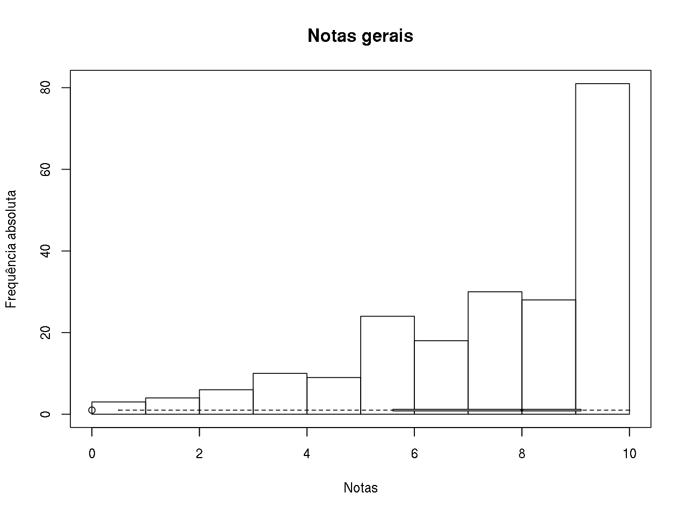
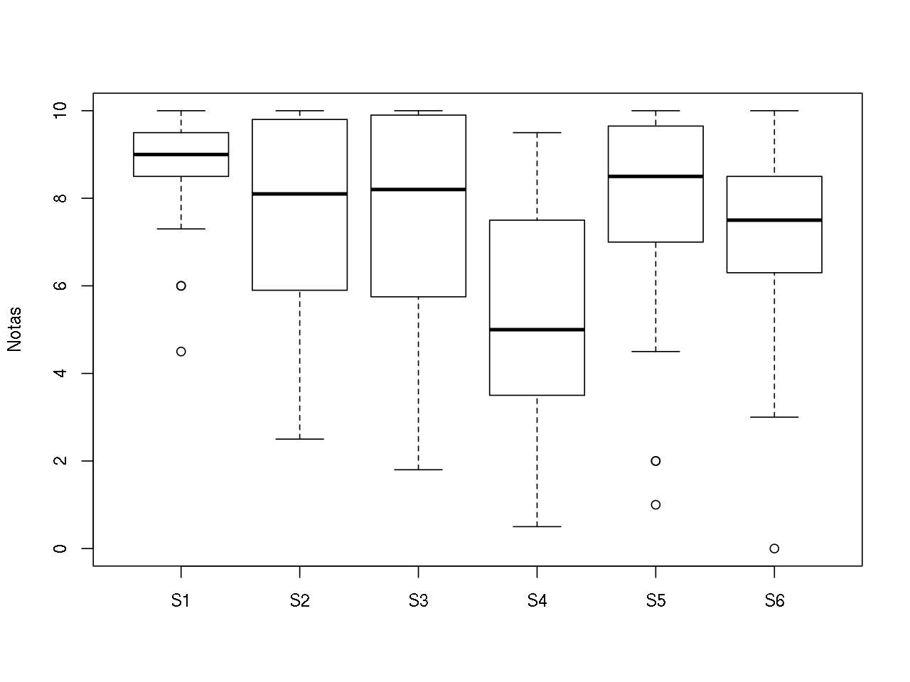
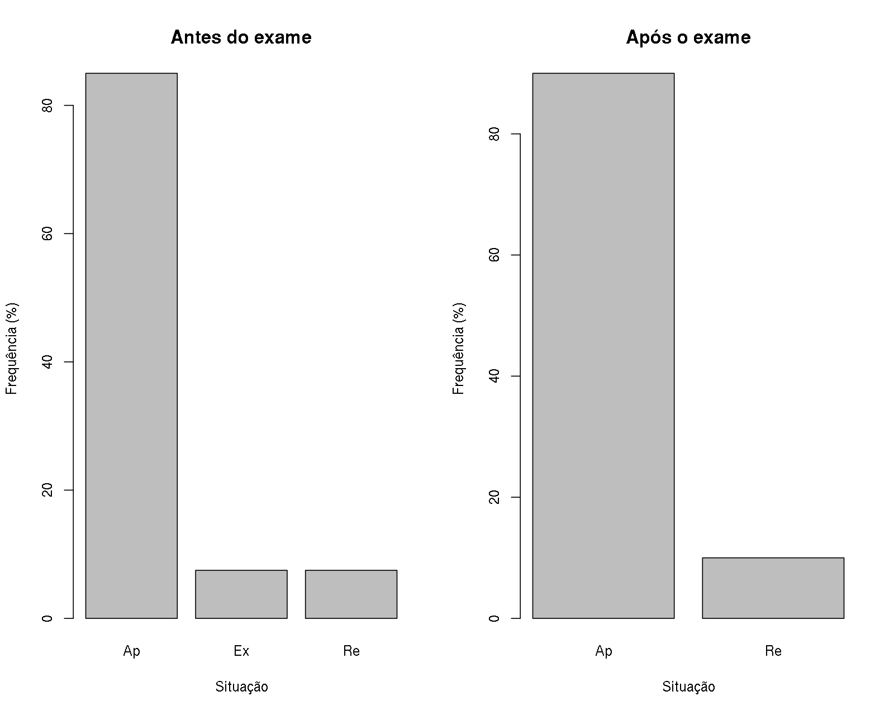

Notas
Histograma e box plot geral
## Grafico geral das notas
breaks <- 0:10
## table(cut(notas$S1, breaks = breaks,
## right = FALSE, include.lowest = TRUE))
## Junta notas de todas as sabatinas em um único vetor
notas.all <- do.call(c, notas[, notas.col])
hist(notas.all, breaks = breaks, right = FALSE, include.lowest = TRUE,
main = "Notas gerais", xlab = "Notas", ylab = "Frequência absoluta")
boxplot(notas.all, horizontal = TRUE, ylim = c(0, 10),
col = "lightgray", add = TRUE)
Resumo dos cinco números, média, desvio-padrão, e número de provas não realizadas (NA):
statm <- function(x){
res <- c(fivenum(x),
mean(x, na.rm = TRUE),
sd(x, na.rm = TRUE),
sum(is.na(x)))
names(res) <- c("Min", "Q1", "Q2", "Q3", "Max", "Média", "s", "NAs")
return(res)
}
round(statm(notas.all), 2) Min Q1 Q2 Q3 Max Média s NAs
0.00 5.60 8.00 9.10 10.00 7.30 2.43 27.00 Resumos por prova
Box plot de cada prova
## Boxplots comparando as notas entre sabatinas
boxplot(notas[, notas.col], ylim = c(0, 10), ylab = "Notas")
Resumo dos cinco números, média, desvio-padrão, e número de provas não realizadas (NA):
round(apply(notas[, notas.col], 2, statm), 2) S1 S2 S3 S4 S5 S6
Min 4.50 2.50 1.80 0.50 1.00 0.0
Q1 8.50 5.90 5.75 3.50 7.00 6.3
Q2 9.00 8.10 8.20 5.00 8.50 7.5
Q3 9.50 9.80 9.90 7.50 9.65 8.5
Max 10.00 10.00 10.00 9.50 10.00 10.0
Média 8.74 7.44 7.70 5.19 7.69 7.0
s 1.21 2.39 2.20 2.41 2.41 2.3
NAs 3.00 3.00 4.00 3.00 4.00 10.0Notas individuais
Aqui estão apenas as notas individuais de cada sabatina. Veja na seção abaixo as médias finais calculadas!
kable(notas[, c(1, notas.col)], align = "c")| Matricula | S1 | S2 | S3 | S4 | S5 | S6 |
|---|---|---|---|---|---|---|
| 20124646 | 6.0 | 5.9 | 1.8 | 4.0 | 7.0 | 8.5 |
| 20124652 | NA | 5.3 | 2.9 | 0.5 | 7.0 | 4.0 |
| 20136720 | 9.5 | 9.8 | 9.9 | 5.0 | 9.0 | NA |
| 20149073 | 8.0 | 7.0 | 8.0 | 3.0 | 8.0 | 7.5 |
| 20149110 | 7.3 | 8.1 | 7.0 | 5.5 | 7.0 | 6.6 |
| 20149145 | 7.5 | 2.5 | 5.3 | 5.5 | 9.0 | 7.5 |
| 20150149 | 4.5 | 2.5 | 6.7 | 0.5 | 6.0 | 7.5 |
| 20150417 | 9.0 | 10.0 | 10.0 | 8.0 | 10.0 | 7.6 |
| 20150452 | 8.7 | 3.0 | 5.5 | 5.0 | 9.0 | 5.6 |
| 20150470 | 8.5 | 6.0 | 6.0 | 3.0 | 1.0 | 0.0 |
| 20150836 | 9.0 | 10.0 | 10.0 | 8.0 | 10.0 | 10.0 |
| 20150978 | 9.8 | 9.8 | 10.0 | 7.5 | 10.0 | 9.0 |
| 20151292 | 9.5 | 7.0 | 8.9 | 1.5 | 6.0 | 5.0 |
| 20151516 | 9.0 | 10.0 | 9.9 | 5.0 | 9.5 | NA |
| 20152147 | 7.5 | 6.5 | 5.3 | 4.5 | 7.0 | 6.5 |
| 20152591 | 9.0 | 9.5 | 8.4 | 7.5 | 10.0 | NA |
| 20152736 | NA | NA | NA | NA | NA | NA |
| 20152967 | NA | NA | NA | NA | NA | NA |
| 20152988 | 8.5 | 9.8 | 7.0 | 7.5 | 10.0 | 7.5 |
| 20153016 | 9.8 | 10.0 | NA | 8.5 | 10.0 | NA |
| 20153599 | 9.5 | 4.8 | 5.0 | 3.5 | NA | 8.1 |
| 20153646 | 10.0 | 6.8 | 7.3 | 4.8 | 9.8 | 6.5 |
| 20154101 | 9.7 | 9.5 | 10.0 | 7.0 | 9.0 | 10.0 |
| 20154112 | 8.5 | 4.0 | 7.5 | 3.5 | 7.0 | 6.5 |
| 20154179 | 9.5 | 9.5 | 9.9 | 7.0 | 9.0 | NA |
| 20154443 | 10.0 | 8.0 | 9.0 | 9.0 | 8.0 | 9.5 |
| 20154966 | 10.0 | 9.8 | 10.0 | 9.5 | 10.0 | 10.0 |
| 20155156 | 6.0 | 5.5 | 8.9 | 5.0 | 2.0 | 9.1 |
| 20155208 | 9.0 | 3.5 | 9.0 | 2.5 | 7.0 | 6.5 |
| 20156753 | 9.8 | 9.8 | 8.5 | 8.0 | 10.0 | NA |
| 20157092 | 9.0 | 9.1 | 5.0 | 3.0 | 7.0 | 9.1 |
| 20157880 | 9.5 | 5.0 | 9.8 | 5.0 | 2.0 | 8.2 |
| 20158399 | 9.0 | 6.8 | 9.0 | 3.5 | 4.5 | NA |
| 20159053 | 9.0 | 8.6 | 5.4 | 5.5 | 9.0 | 3.0 |
| 20159109 | 9.5 | 8.1 | 7.0 | 7.5 | 9.0 | 6.3 |
| 20159160 | 9.0 | 10.0 | 10.0 | 7.5 | 9.0 | 5.7 |
| 20159633 | 9.0 | 8.1 | 8.0 | 4.3 | 8.0 | 7.7 |
| 20159711 | 9.3 | 9.0 | 10.0 | 5.0 | 5.0 | 8.1 |
| 20159781 | 8.0 | NA | NA | NA | NA | NA |
| 20159917 | 9.0 | 6.6 | 5.4 | 1.0 | 6.0 | 3.0 |
Resultados finais
Na tabela abaixo estão as notas consideradas para o cálculo da média final. Das 6 sabatinas, foram consideradas apenas as 4 com maiores notas (N1, N2, N3, N4). A frequência (F) é o percentual de presença.
A média (M) foi calculada com estas 4 notas, e já arredondada para cima nos seguintes casos:
- Médias finais maiores ou iguais a 6,5 e menores do que 7,0 foram arredondadas para 7,0, SE a frequência do aluno foi maior ou igual a 75%.
- Médias finais maiores ou iguais a 3,5 e menores do que 4,0 foram arredondadas para 4,0, SE a frequência do aluno foi maior ou igual a 75%.
Observação: a frequência só foi utilizada aqui para critério de arredondamento de nota. Mesmo que o aluno tenha frequência abaixo de 75%, é permitido fazer o exame.
A coluna de situação (S) indica se o aluno foi aprovado (Ap), ficou em exame (Ex), ou foi reprovado (Re).
##----------------------------------------------------------------------
## Tabela com as notas finais
## Ordena pelas maiores notas
notas2 <- apply(notas[, notas.col], 1, sort,
decreasing = TRUE, na.last = TRUE)
## Numero de provas consideradas
np <- 4
## Tabela com as np maiores notas
notas2 <- t(notas2[1:np, ])
## Calcula a media
notas2 <- cbind(notas2,
apply(notas2, 1, function(x) sum(x, na.rm = TRUE)/np))
## Insere o GRR
notas2 <- as.data.frame(cbind(notas$Matricula, notas2))
names(notas2) <- c("Matricula", paste0("N", 1:np), "Media")
## Insere a frequencia (Freq.rel2 de notas)
notas2$Freq.rel <- ceiling(notas$Freq.rel2*100)
## Arredonda a media para duas casa decimais
notas2$Media <- round(notas2$Media, 2)
## Regras para ser aprovado
## 1) Se 6.5 <= MF < 7.0 E Freq >= 75 entao SOMA difer
## Cria nova coluna e condicoes
notas2$Media2 <- notas2$Media
cond.nota1 <- notas2$Media >=6.5 & notas2$Media < 7
cond.nota2 <- notas2$Freq.rel >= 75
## Soma as diferencas
notas2$Media2[cond.nota1 & cond.nota2] <-
notas2$Media2[cond.nota1 & cond.nota2] +
difer(notas2$Media2[cond.nota1 & cond.nota2], 7)
## Regras para ir para exame
## 1) Se 3.5 <= MF < 4.0 E Freq >= 75 entao SOMA difer
## Cria condicoes
cond.exam1 <- notas2$Media >=3.5 & notas2$Media < 4
## Soma as diferencas
notas2$Media2[cond.exam1 & cond.nota2] <-
notas2$Media2[cond.exam1 & cond.nota2] +
difer(notas2$Media2[cond.exam1 & cond.nota2], 4)
##----------------------------------------------------------------------
## BONUS: aqui tem uma aluna que acertou uma questao bonus e ficou com
## uma prova com nota '12'. Portanto, deveria distribuir essa nota entre
## as outras provas dela. Como as outras tambem eram quase 10, vou
## atribuir 10 para todas as provas dela.
## grr <- 20154966
## notas2[notas2$Matricula == grr, ]
## Como ja esta com 10 nas 4 maiores nao precisa fazer isso.
##----------------------------------------------------------------------
##----------------------------------------------------------------------
## Tabela final
notas.fim <- notas2[, 1:5]
notas.fim$M <- notas2$Media2
notas.fim$F <- notas2$Freq.rel##----------------------------------------------------------------------
## Antes do exame (Ex)
## Cria a coluna Situacao
notas.fim$S <- "Ap"
notas.fim$S[notas.fim$M >= 4 & notas.fim$M < 7] <- "Ex"
notas.fim$S[notas.fim$M < 4] <- "Re"
## Mostra tabela
## kable(notas.fim, align = "c")Após o exame: as notas dos exames estão na coluna E. A média final (MF) é a mesma para quem não fez exame, e é a média entre a média final (M) e a nota do exame (E) para quem fez exame. A média final arredondada (MFA) é a nota que será lançada no sistema. A coluna SF mostra a situação final dos alunos após o exame.
##----------------------------------------------------------------------
## Após exame (Ex)
## Insere notas do exame
notas.fim$E <- notas$Ex
## Calcula média final (MF), que é média da nota final com a nota do
## exame (apenas para os que ficaram de exame)
notas.fim$MF <- notas.fim$M
notas.fim$MF[notas.fim$S == "Ex"] <- (notas.fim$M[notas.fim$S == "Ex"] +
notas.fim$E[notas.fim$S == "Ex"])/2
notas.fim$MF <- round(notas.fim$MF, 2)
## Calcula a média final arredonadada (MFA), que é a média multiplicada por
## 10 e arredondada para cima (é como será lançada no sistema)
notas.fim$MFA <- ceiling(notas.fim$MF*10)
## Cria a coluna Situacao final (SF), que indica a situação após exame
notas.fim$SF <- "Ap"
notas.fim$SF[notas.fim$MFA < 50] <- "Re"
## Mostra tabela
kable(notas.fim, align = "c")| Matricula | N1 | N2 | N3 | N4 | M | F | S | E | MF | MFA | SF |
|---|---|---|---|---|---|---|---|---|---|---|---|
| 20124646 | 8.5 | 7.0 | 6.0 | 5.9 | 7.00 | 86 | Ap | NA | 7.00 | 70 | Ap |
| 20124652 | 7.0 | 5.3 | 4.0 | 2.9 | 4.80 | 75 | Ex | 3.0 | 3.90 | 39 | Re |
| 20136720 | 9.9 | 9.8 | 9.5 | 9.0 | 9.55 | 96 | Ap | NA | 9.55 | 96 | Ap |
| 20149073 | 8.0 | 8.0 | 8.0 | 7.5 | 7.88 | 93 | Ap | NA | 7.88 | 79 | Ap |
| 20149110 | 8.1 | 7.3 | 7.0 | 7.0 | 7.35 | 93 | Ap | NA | 7.35 | 74 | Ap |
| 20149145 | 9.0 | 7.5 | 7.5 | 5.5 | 7.38 | 89 | Ap | NA | 7.38 | 74 | Ap |
| 20150149 | 7.5 | 6.7 | 6.0 | 4.5 | 6.17 | 93 | Ex | 5.0 | 5.58 | 56 | Ap |
| 20150417 | 10.0 | 10.0 | 10.0 | 9.0 | 9.75 | 100 | Ap | NA | 9.75 | 98 | Ap |
| 20150452 | 9.0 | 8.7 | 5.6 | 5.5 | 7.20 | 82 | Ap | NA | 7.20 | 72 | Ap |
| 20150470 | 8.5 | 6.0 | 6.0 | 3.0 | 5.88 | 86 | Ex | 5.5 | 5.69 | 57 | Ap |
| 20150836 | 10.0 | 10.0 | 10.0 | 10.0 | 10.00 | 100 | Ap | NA | 10.00 | 100 | Ap |
| 20150978 | 10.0 | 10.0 | 9.8 | 9.8 | 9.90 | 100 | Ap | NA | 9.90 | 99 | Ap |
| 20151292 | 9.5 | 8.9 | 7.0 | 6.0 | 7.85 | 75 | Ap | NA | 7.85 | 79 | Ap |
| 20151516 | 10.0 | 9.9 | 9.5 | 9.0 | 9.60 | 82 | Ap | NA | 9.60 | 96 | Ap |
| 20152147 | 7.5 | 7.0 | 6.5 | 6.5 | 7.00 | 86 | Ap | NA | 7.00 | 70 | Ap |
| 20152591 | 10.0 | 9.5 | 9.0 | 8.4 | 9.22 | 93 | Ap | NA | 9.22 | 93 | Ap |
| 20152736 | NA | NA | NA | NA | 0.00 | 39 | Re | NA | 0.00 | 0 | Re |
| 20152967 | NA | NA | NA | NA | 0.00 | 0 | Re | NA | 0.00 | 0 | Re |
| 20152988 | 10.0 | 9.8 | 8.5 | 7.5 | 8.95 | 96 | Ap | NA | 8.95 | 90 | Ap |
| 20153016 | 10.0 | 10.0 | 9.8 | 8.5 | 9.57 | 82 | Ap | NA | 9.57 | 96 | Ap |
| 20153599 | 9.5 | 8.1 | 5.0 | 4.8 | 7.00 | 79 | Ap | NA | 7.00 | 70 | Ap |
| 20153646 | 10.0 | 9.8 | 7.3 | 6.8 | 8.47 | 86 | Ap | NA | 8.47 | 85 | Ap |
| 20154101 | 10.0 | 10.0 | 9.7 | 9.5 | 9.80 | 93 | Ap | NA | 9.80 | 98 | Ap |
| 20154112 | 8.5 | 7.5 | 7.0 | 6.5 | 7.38 | 96 | Ap | NA | 7.38 | 74 | Ap |
| 20154179 | 9.9 | 9.5 | 9.5 | 9.0 | 9.47 | 96 | Ap | NA | 9.47 | 95 | Ap |
| 20154443 | 10.0 | 9.5 | 9.0 | 9.0 | 9.38 | 96 | Ap | NA | 9.38 | 94 | Ap |
| 20154966 | 10.0 | 10.0 | 10.0 | 10.0 | 10.00 | 100 | Ap | NA | 10.00 | 100 | Ap |
| 20155156 | 9.1 | 8.9 | 6.0 | 5.5 | 7.38 | 89 | Ap | NA | 7.38 | 74 | Ap |
| 20155208 | 9.0 | 9.0 | 7.0 | 6.5 | 7.88 | 68 | Ap | NA | 7.88 | 79 | Ap |
| 20156753 | 10.0 | 9.8 | 9.8 | 8.5 | 9.53 | 75 | Ap | NA | 9.53 | 96 | Ap |
| 20157092 | 9.1 | 9.1 | 9.0 | 7.0 | 8.55 | 93 | Ap | NA | 8.55 | 86 | Ap |
| 20157880 | 9.8 | 9.5 | 8.2 | 5.0 | 8.12 | 82 | Ap | NA | 8.12 | 82 | Ap |
| 20158399 | 9.0 | 9.0 | 6.8 | 4.5 | 7.33 | 93 | Ap | NA | 7.33 | 74 | Ap |
| 20159053 | 9.0 | 9.0 | 8.6 | 5.5 | 8.03 | 96 | Ap | NA | 8.03 | 81 | Ap |
| 20159109 | 9.5 | 9.0 | 8.1 | 7.5 | 8.53 | 96 | Ap | NA | 8.53 | 86 | Ap |
| 20159160 | 10.0 | 10.0 | 9.0 | 9.0 | 9.50 | 96 | Ap | NA | 9.50 | 95 | Ap |
| 20159633 | 9.0 | 8.1 | 8.0 | 8.0 | 8.28 | 100 | Ap | NA | 8.28 | 83 | Ap |
| 20159711 | 10.0 | 9.3 | 9.0 | 8.1 | 9.10 | 93 | Ap | NA | 9.10 | 91 | Ap |
| 20159781 | 8.0 | NA | NA | NA | 2.00 | 46 | Re | NA | 2.00 | 20 | Re |
| 20159917 | 9.0 | 6.6 | 6.0 | 5.4 | 7.00 | 75 | Ap | NA | 7.00 | 70 | Ap |
Número de alunos em cada situação:
- Antes do exame
addmargins(table(notas.fim$S))
Ap Ex Re Sum
34 3 3 40 - Após o exame
addmargins(table(notas.fim$SF))
Ap Re Sum
36 4 40 Gráfico de barras com os percentuais por situação:
par(mfrow = c(1, 2))
barplot(prop.table(table(notas.fim$S))*100,
xlab = "Situação", ylab = "Frequência (%)",
main = "Antes do exame")
barplot(prop.table(table(notas.fim$SF))*100,
xlab = "Situação", ylab = "Frequência (%)",
main = "Após o exame")
par(mfrow = c(1, 1))

Este conteúdo está disponível por meio da Licença Creative Commons 4.0